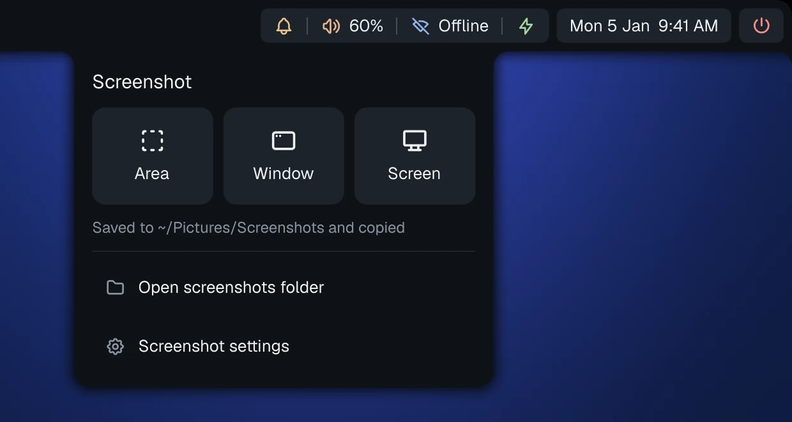

Apps and tools
Screenshots
Take a picture of part of your screen, one window, or all of it. Each one is saved and copied at the same time, ready to paste or to mark up.
Taking one
| Keys | What it takes |
|---|---|
| An area: the screen holds still, and you drag out the part you want. Press Esc to change your mind. | |
| Super + Print | The whole screen the pointer is on. |
From the menu bar
For a single window, or if you'd rather click than press keys, add the screenshot button to your menu bar: choose Edit layout from the bar's right-click menu and drag it on (Arranging it your way). Its panel takes an area, a window (the screen holds still and you click the window you want) or the screen, and opens your screenshots folder.

Where they go
Every screenshot is saved to your screenshots folder and copied, so you can paste it straight into a message. Set it up in Settings → Screenshots:
| Setting | What it does |
|---|---|
| Save to | Pictures/Screenshots (to start with), Pictures, Desktop or Downloads. |
| File names | How they're named: Screenshot 2026-11-12 09.41.00 (to start with),
2026-11-12_09-41-00, or Screenshot from 2026-11-12 09-41-00. |
| Screenshot folder | Open shows you the folder. |
If a screenshot can't be taken or saved, Slate tells you why in a notification. One that couldn't be saved is still copied, so you can paste it. Pressing Esc while choosing just cancels.
Marking them up
After taking one chooses what happens next:
- Open it to mark up (to start with) opens the screenshot in swash, to mark it up. Saving there updates the same file, so there's nothing more to decide.
- Just show a notification leaves it saved and copied.
Marking up needs swash installed. Without it, Slate shows a notification instead.
While Private Mode is on, Slate doesn't take screenshots. You'll get a gentle reminder instead, and they work again as soon as you turn it off.
Recording the screen
Under Record the screen in the menu bar's Screenshot panel, choose Area, Window or Screen, or press Super + Shift + Print Screen to record an area. While it records, the menu bar's Screenshot button turns red and counts the time (it shows even if you've hidden it); click it, or press the same keys again, to stop. The video is saved in your screenshot folder, and a notification tells you where.
| Setting | What it does |
|---|---|
| Computer sound | What's playing goes into the recording (off to start with). |
| Microphone | What your microphone hears goes in too (off to start with). With both on, they're mixed together. |
Both switches are also right under the three choices in the Screenshot panel, so you can set them as you start
one. Recording needs wf-recorder (the wf-recorder package), and both sounds together need
pactl (in libpulse or pulseaudio-utils); without them, Slate says what to
install. Turning on
Private Mode stops a recording (it's saved as it is), and none start while it's on.
Picking a color
Super + P picks a color from anywhere on screen and copies it, ready to paste into a design or your code.